Full archive import with a bounded model sample. 12 regression methods completed. Validation selected XGBoost.
xD is expected damage conditional on a recorded hit. Cell means require five events and two matches. These figures do not estimate kill probabilities or establish tactical causation.
Measured results report | Model metrics CSV | Run settings | Heatmap support
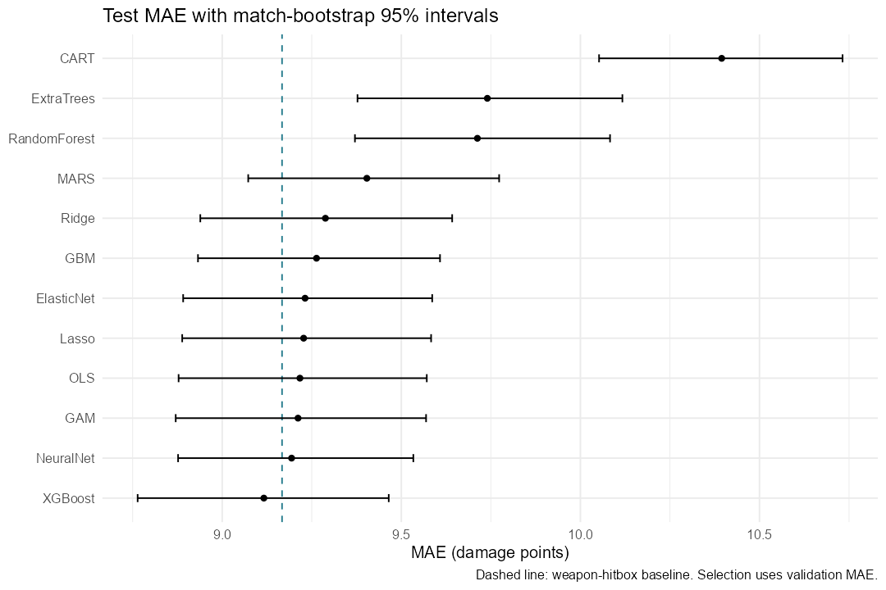
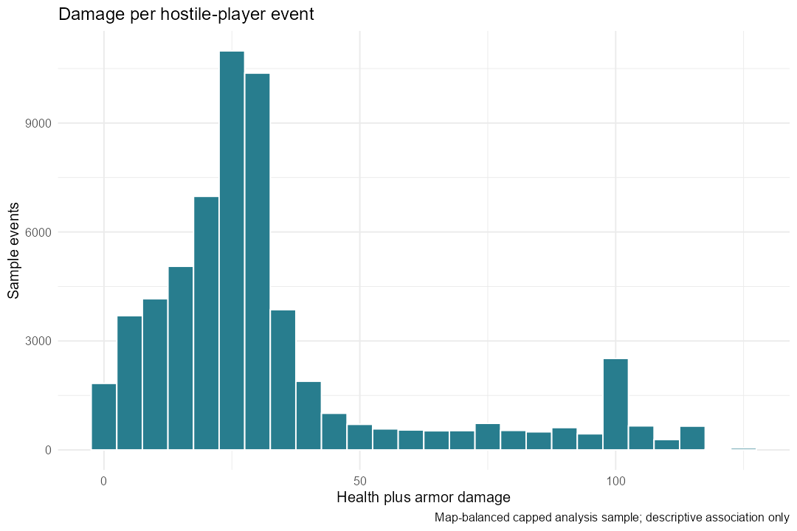
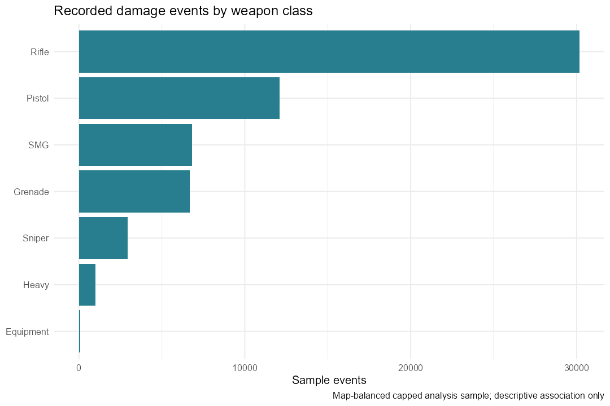
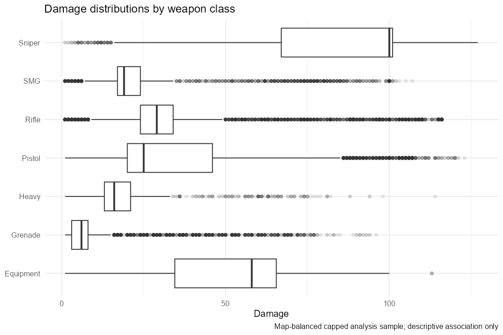
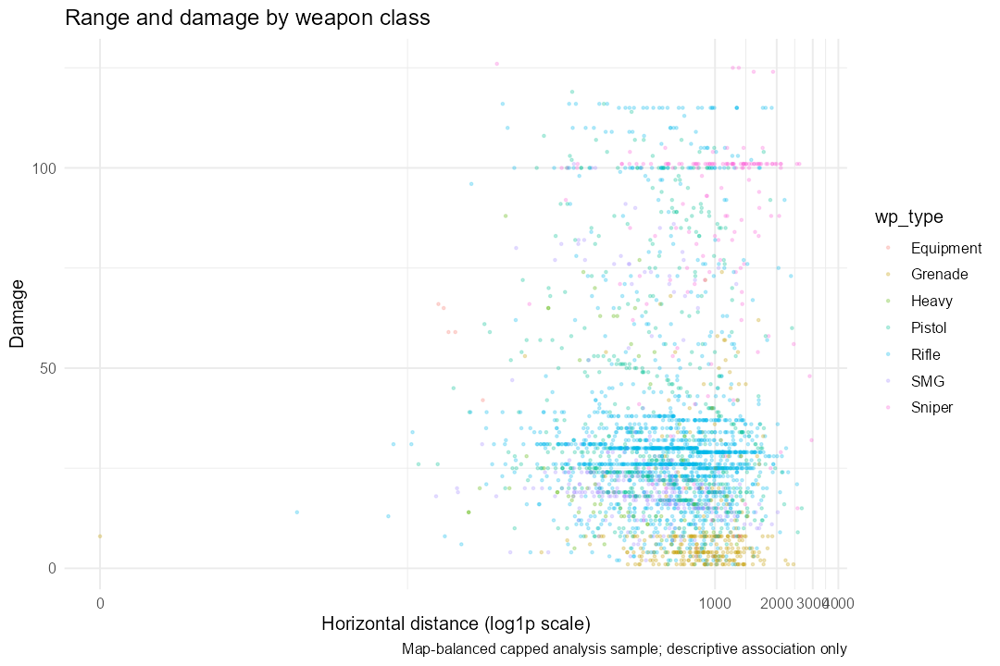
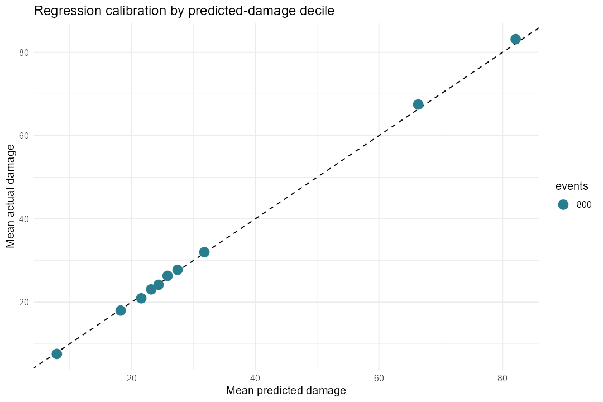
Interactive: weapon classes | range and damage | model comparison
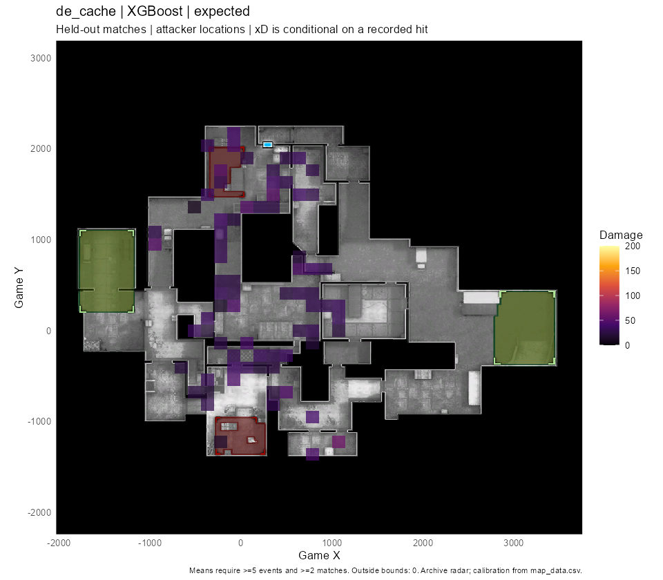
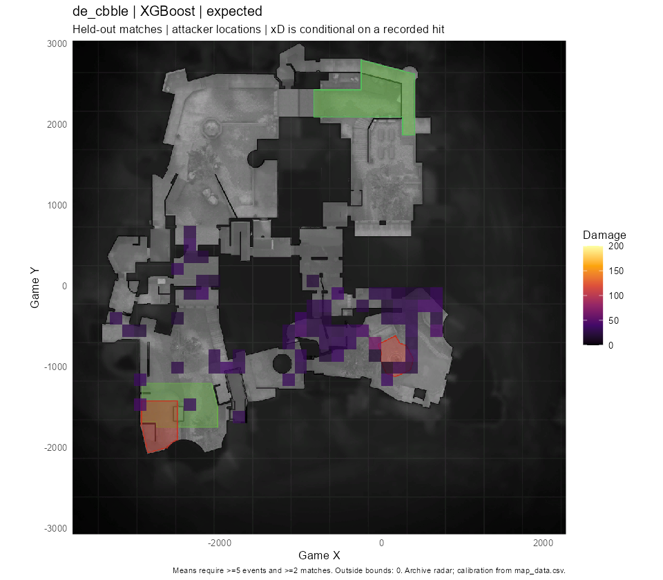
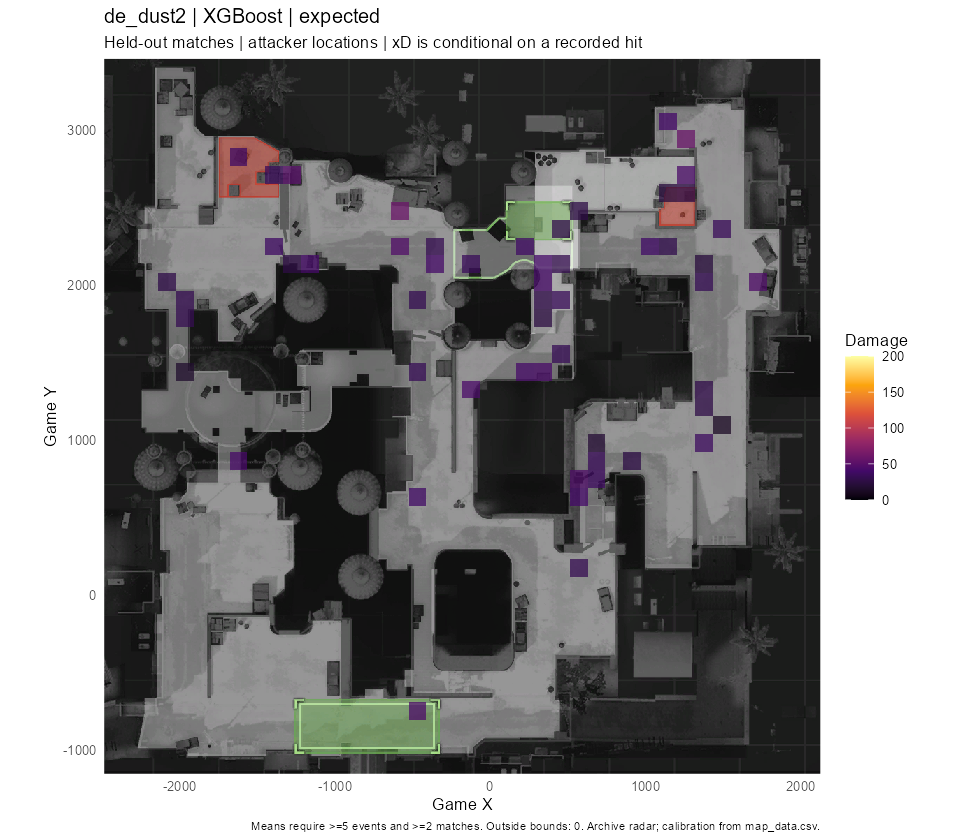
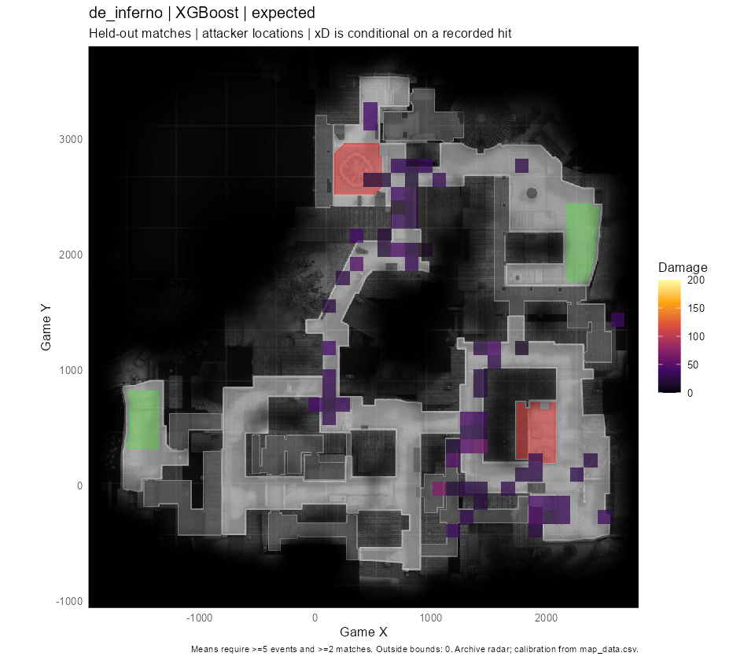
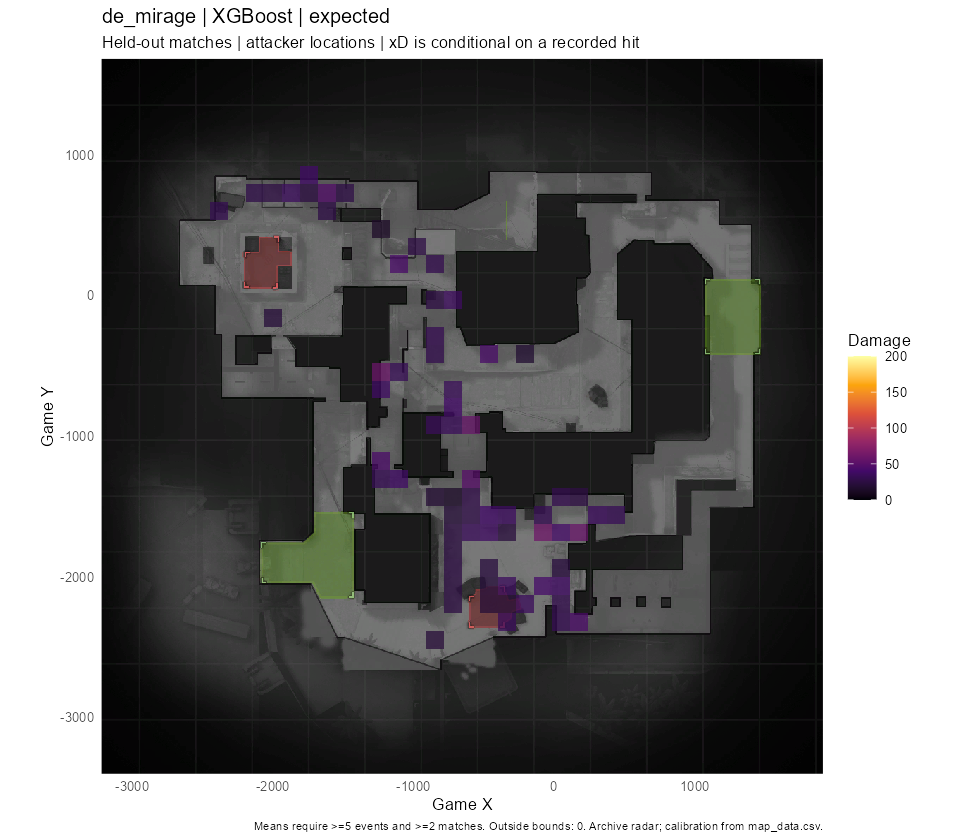
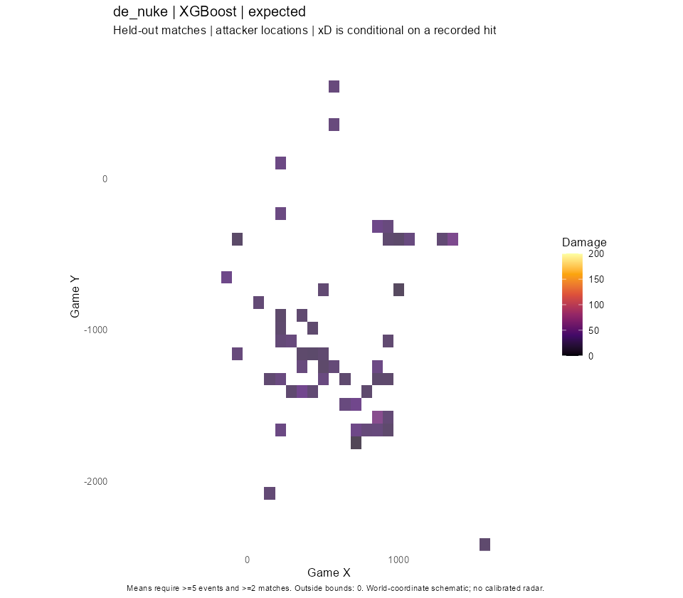
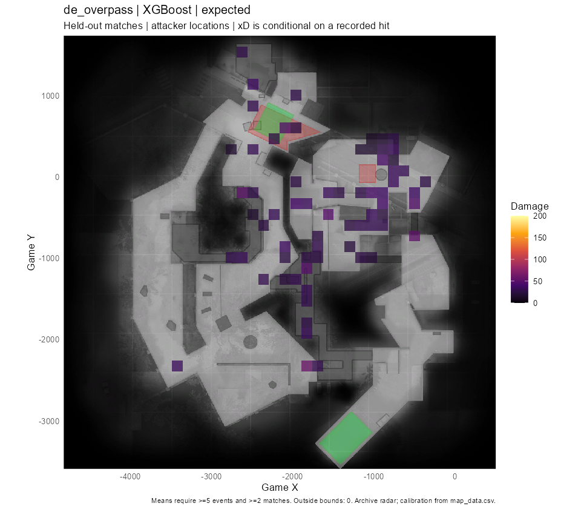
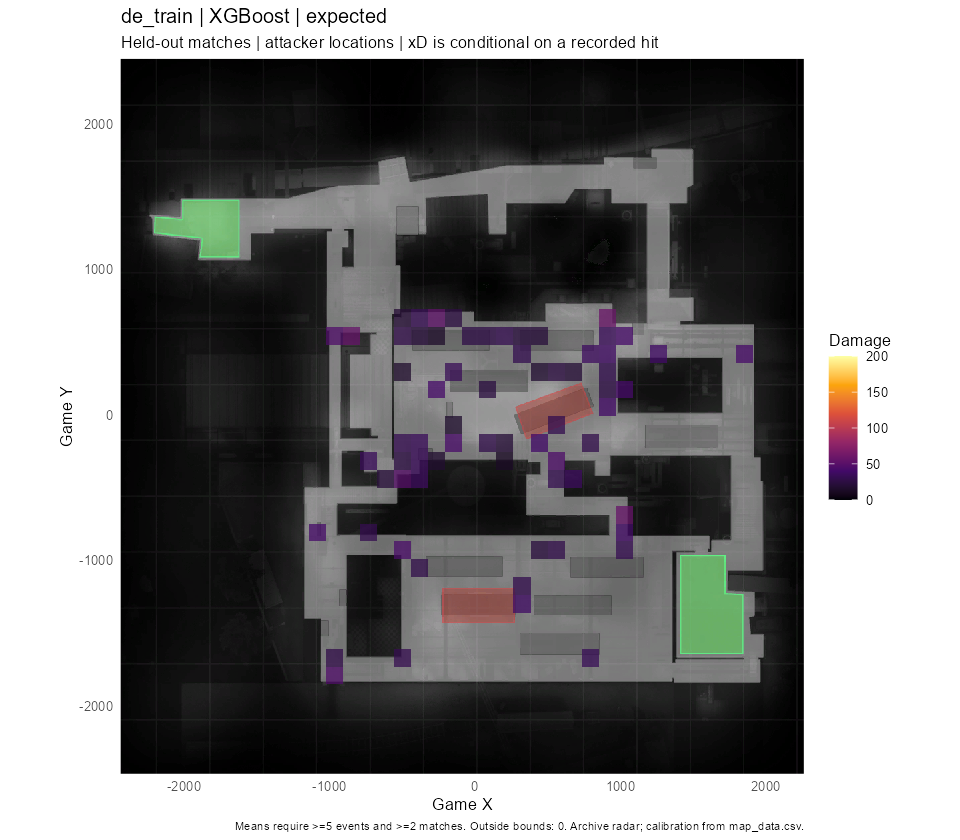